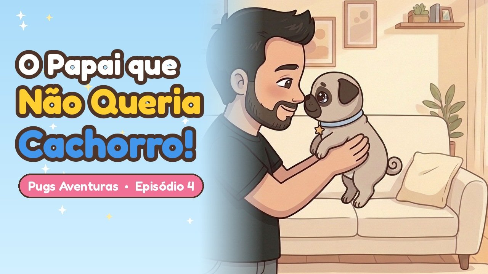

A Joy e a Jane são pugs de verdade! A Joy, levada e alegre, conta as aventuras de quando era filhotinha. A Jane, filha dela, continua aqui com a gente. Cada episódio termina com uma liçãozinha e com as fotos da Joy de verdade.
Episódio 1 · Procura-se uma pug
No ar desde 07/10
A mamãe sonhava com uma pug. O papai avisou: "Cachorro? Só se for pequenininho!" Até que chegou a Joy, com um lambeijo bem na portaria.
Lição: quem chega na família é recebido com carinho, uma caminha quentinha e um nome bem bonito.
Episódio 2 · A Joy e os chinelos do papai
No ar desde 14/10
A família saiu para o jogo e a Joy ficou cuidando da casa. Sozinha, ela descobriu um segredo: o pininho do chinelo sobe! Ploc!
Lição: a Joy não fazia por mal. Ela só queria ficar pertinho de quem ela ama.
Episódio 3 · A roupinha de meia
No ar desde 21/10
Fazia muito frio e a Joy tremia. Foi aí que a mamãe teve uma ideia com uma meia do papai…
Lição: uma coisa velhinha pode virar uma coisa nova, e o carinho da família esquenta o coração.
 Em breve 🐾
Em breve 🐾
Episódio 4 · O papai que não queria cachorro
Quarta, 28/10
Ele dizia que não queria cachorro. Em poucos dias, quem não desgrudava da Joy era ele!